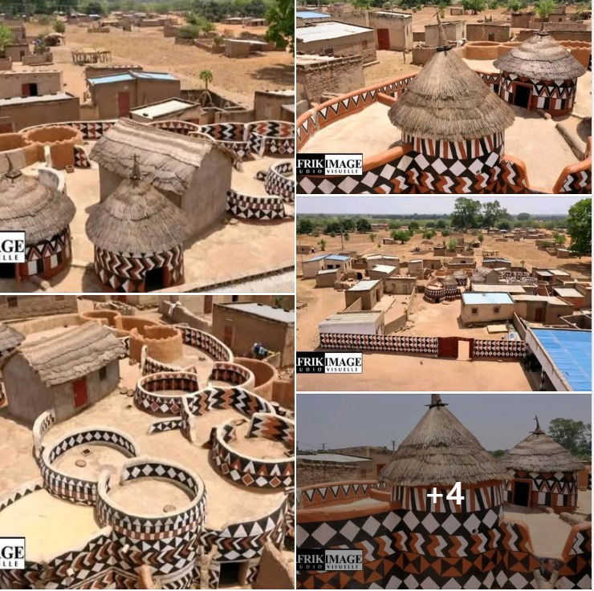
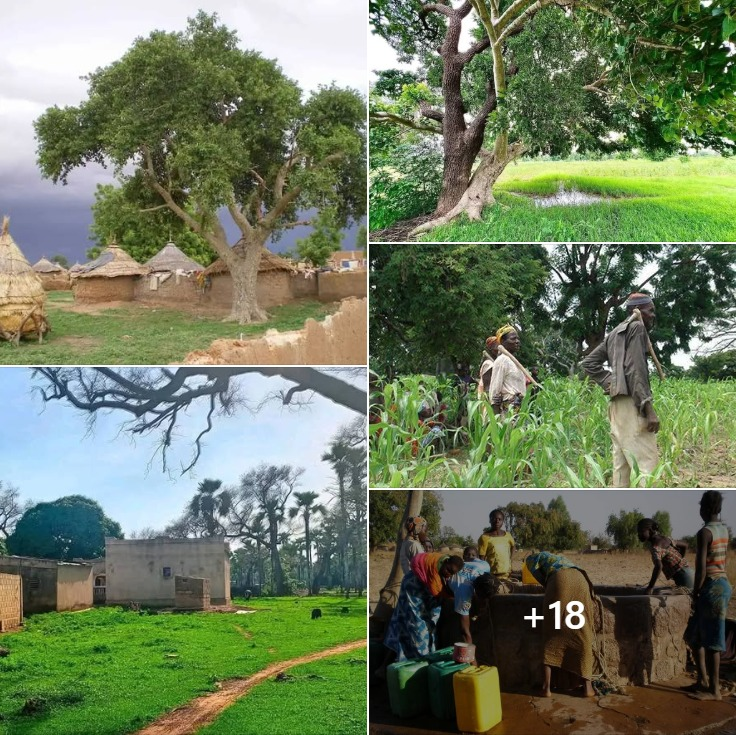
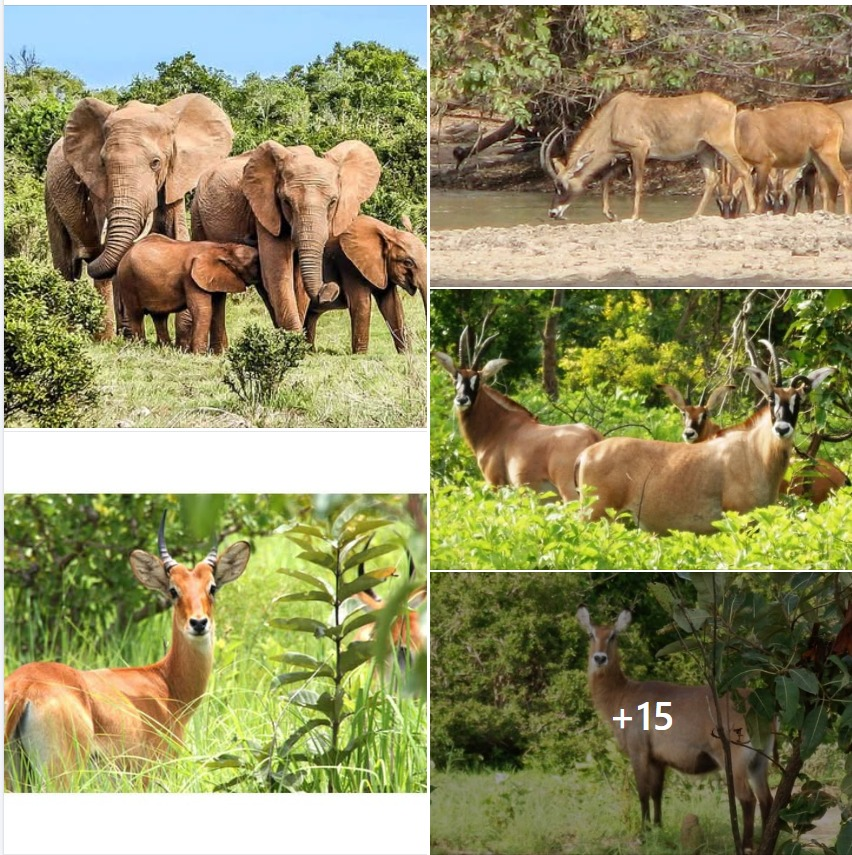
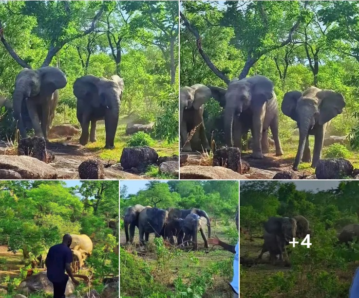
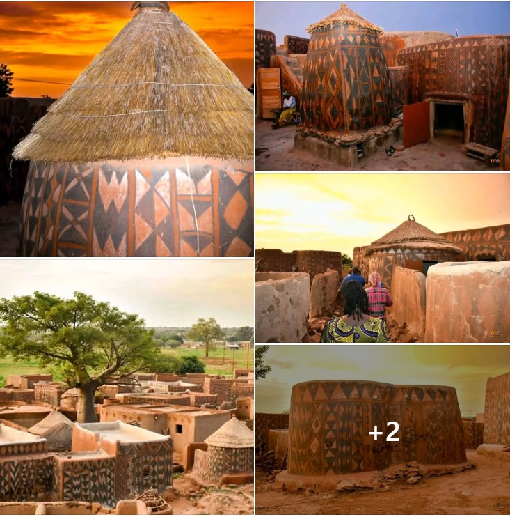
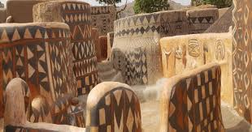
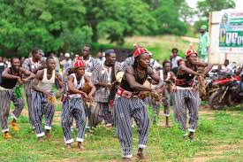
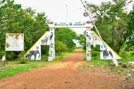

Panorama de la région du Nazinon
« Savanes fertiles et patrimoine vivant »
Pays : Burkina Faso
Statut : Région
Provinces : 3 (Bazèga, Nahouri, Zoundwéogo)
Départements : 19
Chef-lieu : Manga
Population (2024) : 872 800 hab.
Densité : 77 hab./km²
Coordonnées : 11°30'00"N, 1°10'00"O
Superficie : 11 321 km²
Présentation
Nazinon (anciennement région du Centre-Sud) est l'une des 17 régions administratives du Burkina Faso selon le découpage territorial révisé adopté le 2 juillet 2025. La région porte le nom du fleuve Nazinon (anciennement appelé Volta Rouge), un hydronyme hautement symbolique. Territoire de transition savanière aux portes du Ghana, elle abrite une mosaïque culturelle forte où les communautés Kasséna, Nankana, Gourounsi et Mossi perpétuent des traditions architecturales et rituelles séculaires.

La région de Nazinon a connu des avancées significatives ces dernières années dans les domaines des infrastructures routières et du développement agricole durable.

La réserve de Nazinga : La réserve de Nazinga, ou Ranch de Nazinga, est un espace protégé d’envergure de 913 km², situé près de Pô dans le sud de la région. Organisé de façon éco-responsable en plusieurs zones (conservation, tampon et chasse contrôlée), ce parc s’étend à proximité de la forêt de la Sissili et se distingue par sa faune remarquable, abritant l’une des plus importantes populations d’éléphants sauvages d'Afrique de l’Ouest.

Le parc national Kaboré-Tambi : S'étendant sur 2 427 km² de savanes arbustives protégées, ce sanctuaire naturel majeur est à cheval sur les provinces du Nahouri, du Zoundwéogo et du Bazèga. Traversé de part en part par le fleuve Nazinon, il offre des paysages soudano-zambéziens changeants composés de baobabs, d'acacias et de forêts galeries abritant un écosystème aviaire et animalier d'une richesse exceptionnelle.

La Cour Royale de Tiébélé : Joyau architectural situé dans la province du Nahouri, la cour royale de Tiébélé illustre parfaitement les savoir-faire traditionnels du peuple Kasséna. Les concessions y sont composées de structures anthropomorphes en terre façonnée : des maisons en forme de huit pour les anciens et des complexes rectangulaires pour les familles. Les murs sont entièrement recouverts de fresques géométriques réalisées manuellement par les femmes de la communauté à l'aide d'enduits locaux naturels (talc blanc, graphite noir, latérite rouge) assurant la protection contre les intempéries.

Tourisme & Culture
La région du Nazinon (chef-lieu Manga) abrite un patrimoine culturel et naturel exceptionnel, porté par la richesse de la province du Nahouri. Au cœur de ce territoire se dresse la Cour royale de Tiébélé, un chef-d'œuvre architectural unique inscrit au patrimoine mondial de l'UNESCO, où les concessions en terre façonnée sont ornées de magnifiques fresques géométriques peintes à la main par les femmes Kasséna. Cette identité culturelle vibrante s'exprime également à travers les danses et masques Kasséna, des cérémonies rituelles traditionnelles rythmées par des chants et des percussions ancestrales. Sur le plan de l'éco-tourisme, la région brille à l'échelle internationale grâce au Ranch de Nazinga, une réserve protégée de premier plan qui offre une expérience d'observation privilégiée des grands pachydermes et des safaris écologiques rigoureusement surveillés.

Patrimoine Unique, Cour royale de Tiébélé
Tradition, Danses et Masques Kasséna
Ranch de Nazinga, ÉcotourismeRessources naturelles
La région du Nazinon (chef-lieu Manga) dispose d'un important capital de ressources naturelles et de sites écologiques stratégiques, encadrés par le Ministère de l'Environnement, de l'Eau et de l'Assainissement. Le potentiel environnemental et écotouristique de la région repose principalement sur ses grandes aires protégées, notamment le Ranch de Nazinga (913 km²), le Parc National Kaboré-Tambi (2 427 km²) et la forêt classée de la Sissili, qui préservent une riche biodiversité de savane. Le réseau hydrographique, dominé par le cours d'eau du Nazinon (320 km), alimente de vastes plaines alluviales propices aux aménagements hydro-agricoles indispensables à la sécurité alimentaire locale. Enfin, sur le plan géologique et industriel, les données du Ministère de l'Énergie, des Mines et des Carrières confirment de réelles opportunités minières avec des gisements d'or exploités de manière artisanale, complétés par d'abondantes réserves de matériaux de construction (granite et latérite) essentielles pour le développement des infrastructures régionales.
Potentiel agricole 🌾
La région du Nazinon (chef-lieu Manga) bénéficie d'un potentiel agropastoral remarquable soutenu par un climat nord-soudanien propice et un réseau de bas-fonds hautement stratégique. L'essor agricole territorial repose prioritairement sur la riziculture, fortement stimulée par des aménagements hydro-agricoles gouvernementaux comme les aménagements rizicoles de Nobéré et de Gogo, qui mobilisent massivement les producteurs locaux pour la souveraineté alimentaire. Parallèlement à la production des céréales de base telles que le maïs, le sorgho et le mil, la région se positionne comme un pôle d'excellence pour l'arboriculture fruitière, particulièrement mise en valeur lors du Salon Régional des Agrumes et Dérivés (SRAD) à Manga. Ce secteur de production végétale est soutenu par un élevage dynamique et l'introduction d'assurances agricoles paramétriques souveraines destinées à sécuriser durablement les investissements des exploitants face aux variations pluviométriques.
Potentiel éducatif 🏫
La région du Nazinon (chef-lieu Manga) affiche une dynamique éducative en pleine expansion, structurée par un maillage d'établissements scolaires répartis sur l'ensemble de ses provinces et Circonscriptions d'Éducation de Base (CEB). Le système scolaire régional assure la scolarisation d'un large effectif d'élèves dès le préscolaire et le primaire, grâce à l'engagement d'un important corps d'enseignants et d'encadreurs pédagogiques. Afin de répondre aux orientations stratégiques du gouvernement burkinabè et d'accroître l'employabilité des jeunes, les infrastructures de la région intègrent un réseau renforcé de collèges d'enseignement général (CEG) ainsi que des centres d'Enseignement et de Formation Technique et Professionnelle (EFTP). Ces efforts, soutenus par des partenariats internationaux majeurs, visent à moderniser continuellement les conditions d'apprentissage, à sécuriser les espaces scolaires et à promouvoir une éducation inclusive et de qualité pour toute la jeunesse du territoire.
Potentiel commercial 🛒
La région du Nazinon (chef-lieu Manga) occupe une position géographique stratégique le long de la frontière avec le Ghana, ce qui facilite les flux de transit et l'import-export. Le commerce local s'anime principalement au rythme des marchés cycliques (les jours de marché) de Manga, Pô et Kombissiri, où s'échangent le bétail, la volaille locale et des produits du cru comme le sésame, les agrumes et le beurre de karité. Cependant, ce potentiel reste freiné par un manque important d'investissements et des infrastructures logistiques encore insuffisantes. Pour tenter de structurer ces échanges à l'avenir, le gouvernement a récemment identifié et sécurisé une réserve foncière de 42 hectares à Manga afin d'y planifier une future zone industrielle et logistique, même si le tissu industriel de la région demeure pour l'instant très limité.
Artisanat traditionnel
La région du Nazinon (chef-lieu Manga) possède un artisanat d'art et utilitaire profondément lié à ses traditions communautaires, bien qu'il s'exerce encore de manière essentiellement informelle et saisonnière pendant la saison sèche. Au cœur de ce savoir-faire se distinguent les peintures murales d'art, des fresques géométriques à base de pigments naturels appliquées manuellement par les femmes Kasséna sur les architectures en terre de la province du Nahouri. La région est également reconnue pour sa poterie traditionnelle, une activité féminine de subsistance permettant de façonner à la main des jarres et des canaris indispensables aux ménages ruraux pour la conservation de l'eau. Enfin, la vannerie fine s'appuie sur l'exploitation des herbes et fibres végétales de la savane pour tresser des nattes, des paniers d'usage courant et des chapeaux traditionnels. Ces productions, majoritairement destinées à l'autoconsommation locale, constituent un complément de revenus essentiel pour les familles de la région en dehors des périodes de travaux champêtres.
Carte de situation
Provinces